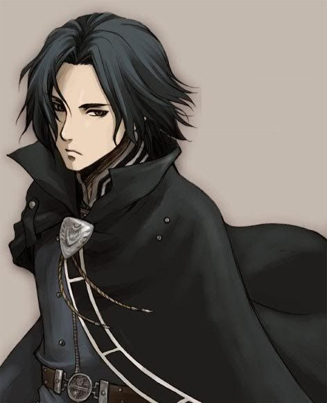

| Edric Ashmore | Lord of the Ashmore Marches House Ashmore, a Banner House of the north as of the morning of the seven lines in the Hall of Verdicts, sworn with his hand on the black stone of the dais |
| Epithet | the Bought Boar the Tenrai factors said it for twenty years and meant it, and wrote it in their reports; since the Skeldmere the whole north says it with a grin, because the boar took the silver, wore it at his throat and rode down the men who paid it |
| Concept | He won’t say yes until the wine has gone cold, and once he says it nothing on earth turns his horse. |
| Stat line | Stage V Splintering · Expert (Faceted) Level 160 · Refined · unclassed until Glory Body V Mastered, unread below Glory · Fate IV Walked 40%, unread · Spirit Studied 10%, unread · Lenses: none named, his arts running on habit and custom and no Wellspring · yield (η) 0.60 |
| Combat grammar | Blade, from the saddle; a lancer’s lord |
| Aura and sound | brown and russet, the color of autumn bracken against snow · sound: hoofbeats a long way off, coming closer |
| How he moves | tall and spare and in no hurry at all; on foot he stands with his hands empty and the long sword in its scabbard, looking at the ground, the roads and the man in front of him for as long as he likes, and nothing said to him shifts his weight; then he calls for his horse, once, out loud, and from the saddle he is a different animal: in a long ragged russet line, lance couched under the arm, straight at the flank at full tilt with his Pressure running out ahead of the hooves, and when the ash breaks the Kessen sword comes out for the cut down from the saddle and does not go back until the thing is finished; he does not feint, wheel or come round for a second look |
| Stack | sustainable Dominion 800, Vitality 680, Dexterity 570 and Resilience 500 cap two steps on the hidden scale over the sustainable figure layers: none; no release, no boost, and the oath on the stone lends him no step |
| Releases | none; a First Release has been open to him since Stage IV and he has never gone looking for one |
| Bonded weapon | none, the Kessen sword is not bonded |
| Kit | a black high-collared cloak over a dark brown coat edged in pale braid, the russet and the boar under it in the field, a long sword that stays in its scabbard until he has decided, and the piece people talk about first: the Silver Boar, a Rare clasp at his throat cast from the first purse of Tenrai silver his house ever took |
| Voice | ”And Ashmore?“ speaker type: a grain lord of the marches who weighs before he speaks and is faintly amazed every time he finds himself committed |
| Field | Value |
|---|---|
| Full Name | Edric Ashmore |
| Pronunciation | ED-rik ASH-mor |
| Age | Fifty-six, and looks younger |
| Realm / Faction | House Ashmore and the Ashmore marches, seat at Ashbury, where the Kessen, the Marrow and the salt road from the south meet; one of the six Banner Houses, sworn to Muken Moto through Hayato Amagiri at the junction stone below Ashbury |
| Colors and arms | plain brown and russet, the russet bright as autumn bracken against the snow; the Ashmore boar |
| Refusal | He will not fight for a cause; he will fight for a road, a price and a promise he can put his hand on |
| Conviction | Whoever holds the roads holds Ashmore’s grain, and for twenty years the Tenrai held them |
| Field | Value |
|---|---|
| Level | 160; it holds Splintering (101) and would hold Glory (115) and Refraction (130), and no Residual Strain builds in him short of 200 |
| Mastery | unread on all three roads: Mastery is not read below Glory |
| Class | Unclassed until Glory |
| Primary | Total |
|---|---|
| Vitality | 680 |
| Ardency | 400 |
| Gnosis | 300 |
| Dexterity | 570 |
| Harmonics | 200 |
| Resilience | 500 |
| Tempering | 150 |
| Dominion | 800 |
| Pool | 3,600, all spent |
| Peaks | Command and Pressure, a horse-lord’s; Fortitude; Economy in the saddle |
| Measure | Figure |
|---|---|
| EU Reserve | 295,202 EU |
| Flux Density | 20,000 EU/g |
| AU/s | 12,000 · empties in 24.60 seconds at full output |
Traits
Full accounts: Edric Ashmore — Abilities
Below Glory his Mastery is unread, and every Trait works at its base.
| Trait | Kind | Source | Path and Form | Gates | What it does | Limit | Tell | Cost | Counter | Numbers |
|---|---|---|---|---|---|---|---|---|---|---|
| THE UNTOUCHED WINE | Primary | — | — | — | While he is weighing a thing, no bribe, threat or shove moves him an inch; when he has finished weighing, he goes in whole and does not turn. (Primary Trait) | Time: a man who needs his answer before the wine is poured gets no answer at all, and a battle that will not wait for the cup to cool goes on without Ashmore in it. | The cup going cold. | Nothing, because nothing is made or thrown; no reserve leaves him. | Make him decide fast: put the thing in front of him already moving, with no table, no map and no steward, so that not answering is itself the answer. | No reserve. |
| THE JUNCTION STONE | Secondary | — | — | — | A promise made with his hand flat on stone sets like the stone, and nobody talks, buys or frightens it loose. (Secondary Trait) | The stone’s: it holds one promise at a time cleanly, and two set on the same stone grind, each wearing at the terms of the other, until the weaker cracks or he is left keeping both badly. | The flat hand. | — | Set two oaths against each other: get a second promise out of him on the same stone that cannot be kept beside the first. | No reserve; one promise to a stone. |
Skills and Abilities
Full accounts: Edric Ashmore — Abilities
Skills
| Skill | Cues / mechanics | Learned where | Priced by (Sub-Stats) | Rank |
|---|---|---|---|---|
| Lance and Long Sword from the Saddle | the couched lance at the gallop, then the long cut down past the horse’s shoulder with a blade balanced for it | the Ashbury tiltyard and the Kessen road | Finesse, Economy | Apprentice |
| Command of Horse | holding five or six hundred riders together and at one pace in a long ragged line, and calling the moment once | twenty years as lord of the marches; the Skeldmere | Command, Pressure | Apprentice |
| Weighing an Offer | reading a map, a price and the man holding them for as long as it takes, and giving nothing away while he does | his own hall, across the table from Tenrai factors | Anchoring, Oath | Apprentice |
| Riding | a horse-lord’s seat on a heavy southern bay, at speed, in harness | the marches, from boyhood | Economy | Apprentice |
| Grain and Roads | what a sack weighs, what it fetches in a famine, and which road it can come up | Ashbury, the sack-seal and the market square | Forecast, Retention | Initiate |
Techniques
| Technique | Kind | Mark | Source | Path and Form | Gates | What it does | Limit | Tell | Cost | Counter | Numbers |
|---|---|---|---|---|---|---|---|---|---|---|---|
| THE UNTOUCHED WINE | Signature art | — | — | Path Body for the Line, Fate for the stone and the Pressure · Lens none: a habit of the soul, a custom of the house and a way of riding, no Wellspring · Form Strike (the Line), Bind (the stone) | none | He won’t say yes until the wine has gone cold, and once he says it nothing on earth turns his horse | — | — | While he weighs, the chance can ride straight past him; once he goes, he cannot turn, even when he should. | — | Sound: hoofbeats coming closer |
| THE ASHMORE LINE | House Art, Signature | Mastered | Taught | — | — | Five or six hundred big southern horses in russet, lances down, in one long ragged line at the gallop, with the lord’s will holding it together and the weight of him rolling out in front. He calls it with two words, said once: “My horse.” (Signature, House Art of Ashmore) | Ground: it needs a field the horses can take at speed, and on ice or in broken country it is a line of men on frightened animals. | The russet coming over the rise. | The house its horses, and the lord nothing he would call a working; the ash goes by the cartload, and a charge that goes in cannot be called back out. | Pikes, set, as Thornwall knows: foot who have been drilled to stand, on ground of their choosing, under a captain whose own Stage shrugs off the weight coming ahead of the horses. | horse: five or six hundred · the Pressure ahead of it: a Stage V lord’s |
Physical Description
| Feature | Description |
|---|---|
| Build | He is tall and spare. |
| Hair | His hair is black, worn to the jaw, parted loose and falling across his brow. |
| Face and eyes | He has a long pale face with a straight nose and a mouth set in a level line, and dark eyes under heavy brows that look at a map for a long time before they look at the man holding it. |
| Dress | He wears a black cloak with a high standing collar, fastened at the throat with a heavy silver clasp worked with the Ashmore boar, over a coat of dark brown edged in pale braid, belted with a round-buckled belt, and a braided cord hanging from the clasp. |
Voice
| Field | Value |
|---|---|
| Speaker type | a grain lord of the marches |
| Notices first | the roads on the map, and whose color they are drawn in |
| Sentence length | very short; he asks, he does not argue |
| Contractions | sometimes |
| Never says | yes before the wine is cold |
| Joy shift | he laughs, once, from the other side of the table |
| Sample line | ”And Ashmore?” |
Equipment
| Item | What it is | Grade | Rarity | Rung | Bonded |
|---|---|---|---|---|---|
| The Silver Boar | cloak clasp with a hanging braided cord | plain | Rare | — | — |
| The hall coat and black cloak | what he wears at Ashbury and in council | plain | Uncommon | — | — |
| The russet harness | mail and a steel breast under a surcoat, his field kit | D | Uncommon | Linepiece | no |
| The Kessen sword | a horseman’s long sword | C | Rare | Wallbiter | no |
| The horse, the tack and the lance | a big southern war-horse in brown harness, the boar on the lance pennant | plain | Uncommon, the lance Common | — | — |
| Item | Stamp | Maker’s mark | Mass and balance | Against armor | Look | How shown off | What people say | Price |
|---|---|---|---|---|---|---|---|---|
| The Silver Boar | — | — | — | — | no working and no stamp a heavy shield-shaped clasp of dull silver as broad as his palm, the Ashmore boar raised on it in low relief, the cord of braided brown leather running down from it to the belt | he wore the receipt at his throat to every table a Tenrai factor sat at, and never once mentioned it | the factors took it for a compliment and reported it as one; since the Skeldmere the whole north has got the joke, and half of them claim they got it first | eight gold for the metal and the work, and he has looked at better offers for exactly as long as they took to go cold |
| The hall coat and black cloak | — | — | — | — | the cloak full-cut black wool with a high standing collar and small dark iron studs at the shoulder where it buttons back for the sword arm; the coat dark brown and close to the body, edged in pale braid, with a ladder of pale tape running from the right shoulder down to a wide brown belt and a round silver buckle | he is the plainest man at any table where he owns the bread, and lets everyone work out what that means | Ashmore dresses like his own clerk | — |
| The russet harness | Proofed | the Kessen proof-house stamp | — | — | plain brown over bright russet, madder on good wool, the color of autumn bracken against snow, with the boar worked large in brown thread on the breast a lance-dent under the boar’s shoulder, hammered out only far enough to stop it catching | the color is the show, picked so that anyone across five miles of snow can tell exactly whose horse is coming | a lord at his Stage could wear a Wallbiter’s plate, and Edric has priced one, twice, against what the same money buys in seed | — |
| The Kessen sword | Tempered | a Journeyman’s anvil and the Kessen mark | about 1.6 kilograms, balanced a hand and a half past the guard for the cut down from the saddle | beats Proofed plate, fails against Instrument plate | a long straight blade of gray steel with a plain wheel pommel and a grip of russet leather over cord the leather has been replaced twice and the blade never reground past its first line, with a small nick a hand from the point left in since the Skeldmere | it stays in the scabbard until he has decided, and once it is out it does not go back until the thing is finished | he bought it in a hungry spring for forty sacks of seed barley, from a smith whose family had nothing to eat, and the smith has never settled whether to be grateful | worth about eighteen gold |
| The horse, the tack and the lance | — | — | — | — | the lances are ash and go through by the cartload a heavy bay worth about fifty gold; bridle and breast-strap plain brown with russet tassels at the headstall | he calls for it out loud, once, and then everybody in the hall knows the waiting is over | — | — |
| The sack-seal | — | — | — | — | an iron die on the belt for stamping lead seals · plain · Uncommon thumb-sized, cut with the boar and the Ashbury measure | — | a sack under the boar sells a tenth higher in a famine because it is full weight, so the marches are thick with forged seals, and he has the forger’s sacks weighed in the market square in front of him | — |
Lore
Full account: Edric Ashmore — Lore
Ties
| Person | Who they are to him |
|---|---|
| Hayato Amagiri | to whom he swore |
| Muken Moto | his king |
| Ilse Hallenfeld | whose junction lies near his |
| Hisae Thornwall | the other house that took the silver and came over |
| Hayato’s uncle | who knelt to him on the ice |